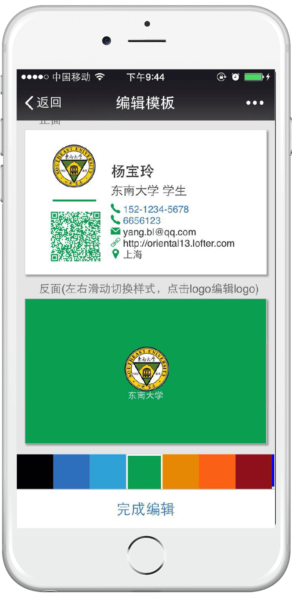
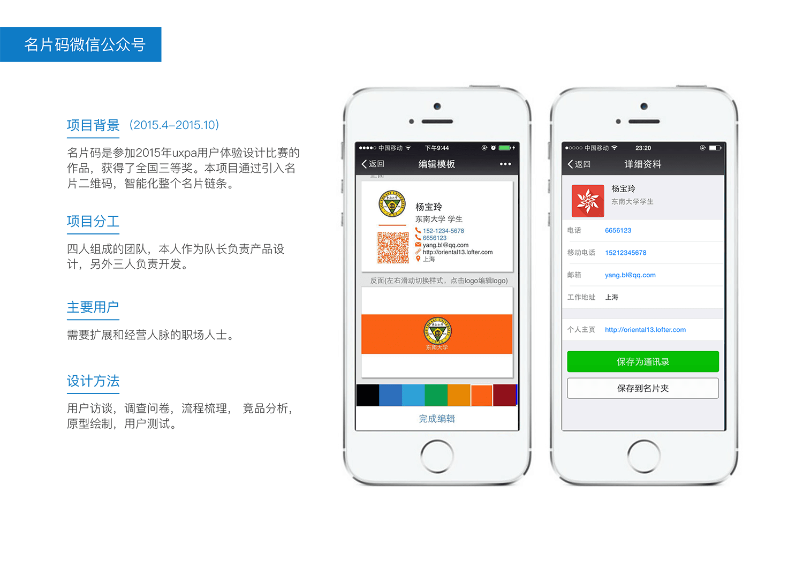
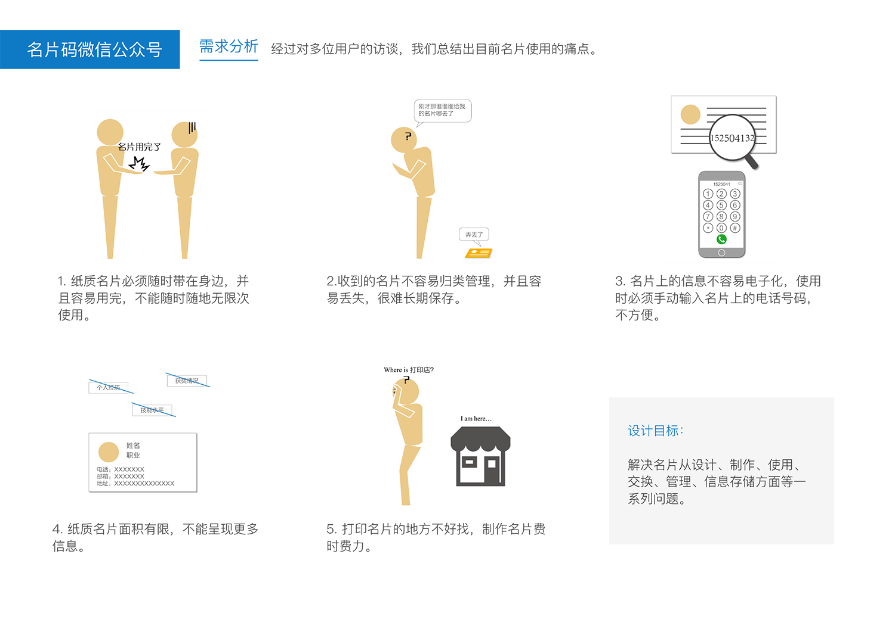
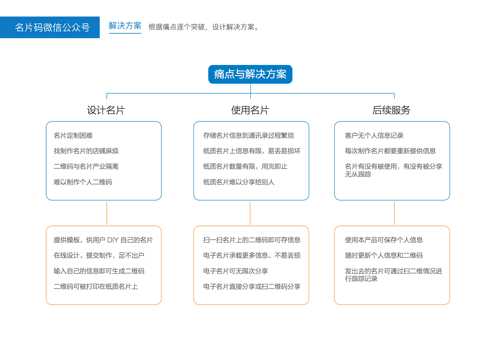
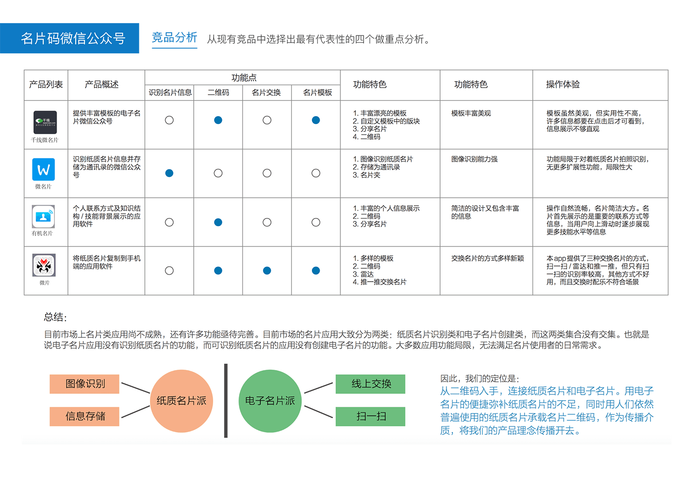
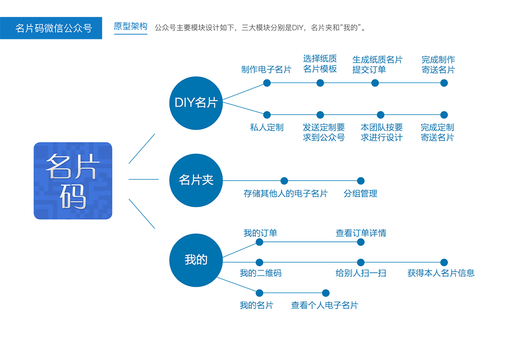
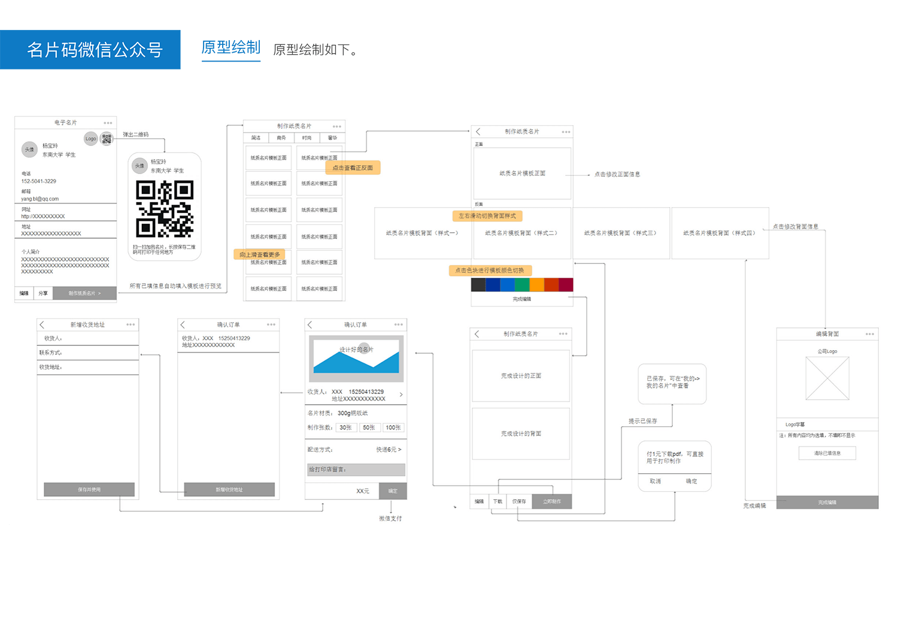
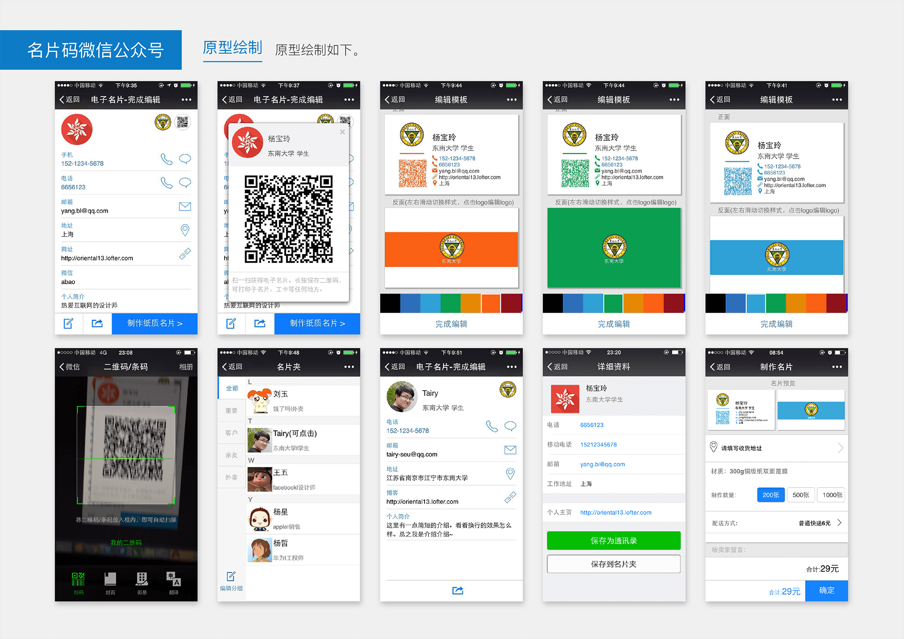

Business Card QR Code (Wechat Official Account)
This project won the 3rd prize for UXPA design competition in China. I led and designed this project and got it developed by 2 engineers.

      